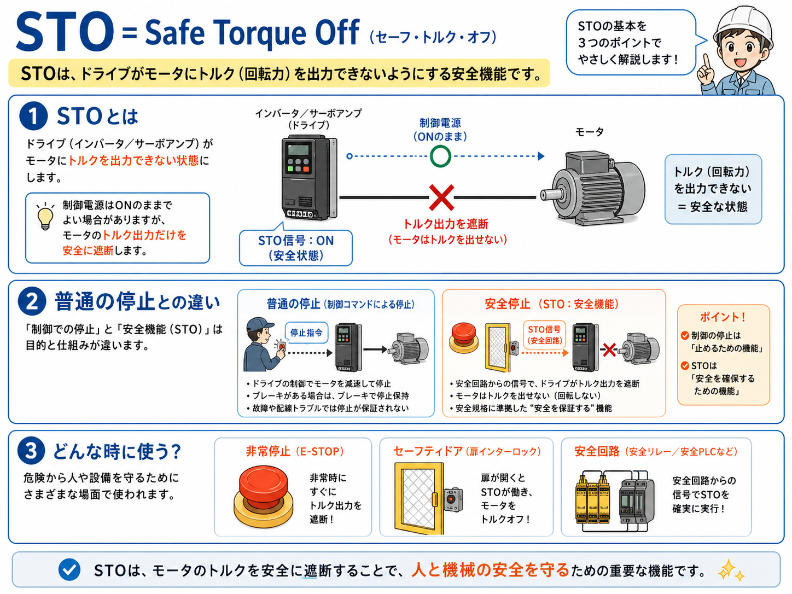
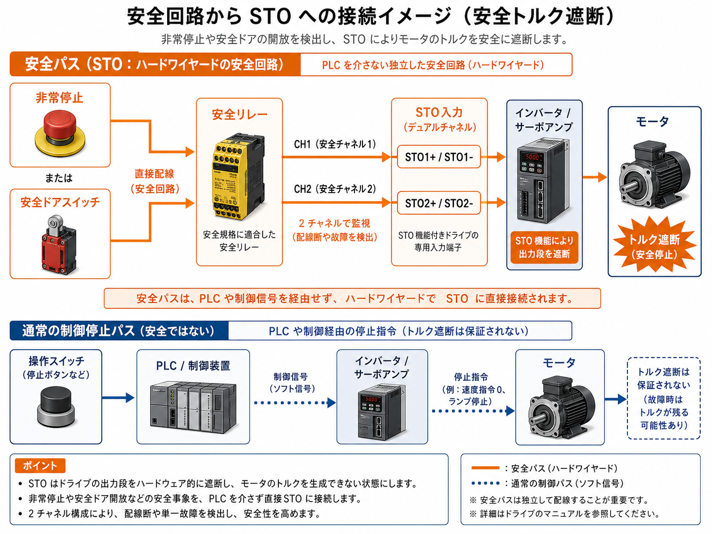
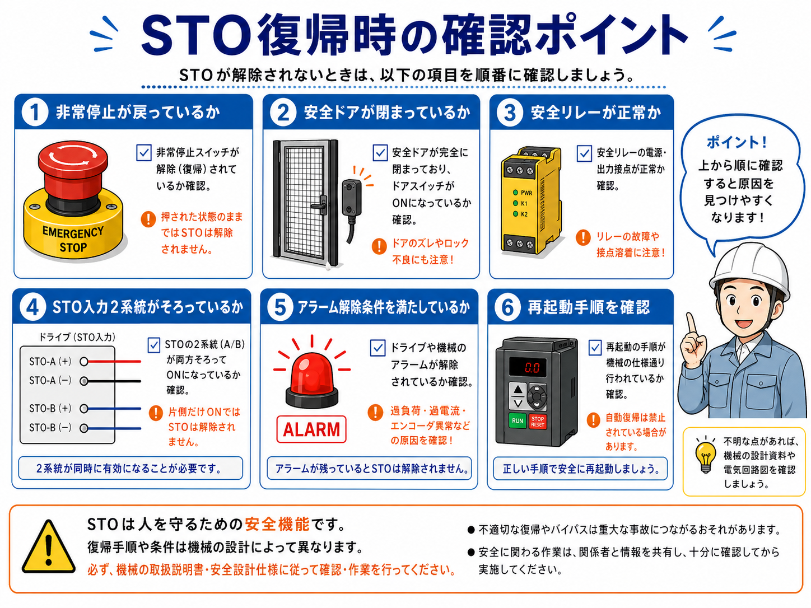

1. 先に結論
STOは、Safe Torque Off の略で、インバータやサーボドライブがモータへトルクを出せない状態にする安全機能です。 日本語では「安全トルク遮断」と考えるとイメージしやすいです。
ここで大事なのは、STOは単なる停止指令ではないということです。 PLCから「停止してください」と命令する制御停止ではなく、安全回路からの入力でドライブ側の出力段を安全側へ落とし、モータが力を出せない状態にします。
STOは「回転を止める命令」ではなく「トルクを出せない状態にする機能」
モータがすぐに完全停止するかどうかは、機械の慣性やブレーキの有無で変わります。 ただし、STOが働くとドライブはモータへ駆動トルクを出せない状態になります。

先輩STOは、インバータやサーボに入る安全入力だね。普通の停止信号とは分けて考えた方がいいよ。

新人PLCで停止命令を出すのとは違うんですね。安全側でトルクを出させないイメージですか？
2. STOとは
STOは、インバータやサーボアンプの内部で、モータへトルクを発生させるための出力を安全側で遮断する機能です。 制御電源や表示が残っていても、STO条件が成立していない場合はモータにトルクを出せません。
そのため、STOは非常停止、安全ドアスイッチ、ライトカーテン、安全リレー、安全PLCなどと組み合わせて使われることがあります。 危険エリアに人が入る可能性がある場面で、モータが力を出せない状態を作るための機能です。

制御電源が入っていても、STOが入っていると動かない
インバータやサーボの画面が点灯していても、STO入力が成立していなければ運転できないことがあります。 「電源はあるのに動かない」時は、STO入力を確認する場面があります。
3. 普通の停止信号との違い
普通の停止信号は、PLCや操作スイッチからドライブへ「停止してください」と指令する制御信号です。 一方、STOは安全回路側の信号で、ドライブがモータへトルクを出せない状態にする安全機能です。
| 項目 | 普通の停止 | STO |
|---|---|---|
| 主な目的 | 制御上の停止 | 安全側でトルクを出せない状態にする |
| 信号の出どころ | PLC、操作スイッチ、制御プログラムなど | 安全リレー、安全PLC、安全ドア、非常停止など |
| 考え方 | 通常運転の中で止める | 危険時に安全条件として止める |
| 注意点 | 故障時や配線異常時の安全保証とは別に考える | 機械仕様・安全設計・メーカー資料に従って扱う |
STOはブレーキそのものではない
STOはトルクを出せない状態にする機能です。 機械によっては慣性で回り続ける場合や、保持ブレーキ・メカブレーキとの組み合わせが必要な場合があります。
4. 安全回路とSTOのつながり
STOは、非常停止や安全ドアスイッチから直接つながるというより、安全リレーや安全PLCを経由してドライブのSTO入力へ入る構成がよくあります。 安全入力が成立している時だけSTO入力が有効になり、ドライブが運転できる状態になります。

- 非常停止：押されると安全回路が落ち、STO入力も不成立になる
- 安全ドアスイッチ：扉が開くと安全条件が崩れ、STO側を停止条件にする
- 安全リレー：CH1/CH2やリセット、EDMを見て安全出力を制御する
- STO入力：ドライブ側の安全入力として、トルク出力の可否に関わる
安全回路はPLCの通常出力だけで代用しない
STOを安全機能として使う場合、安全入力・安全リレー・安全PLC・ドライブ側仕様を含めた設計が必要です。 PLCの通常出力だけで安全機能の代わりにする考え方は危険です。
5. どんな時に使う？
STOは、モータやサーボが動く機械で、人が危険エリアに入る可能性がある場合に使われることがあります。 たとえば、安全ドアを開けた時、非常停止が押された時、ライトカーテンが遮光された時などです。
非常停止
非常停止が押された時に、ドライブのトルク出力を安全側で止める流れに使われます。
安全ドア
ガード扉が開いた時に、危険部が動かないようにする安全条件として使われます。
ライトカーテン
危険エリアへの侵入を検知した時に、駆動側を停止条件へ倒す構成で使われます。
安全リレー・安全PLC
安全入力を監視し、条件成立時だけSTO入力を許可する役割を持ちます。
6. STOが復帰しない時の確認ポイント
STOが解除されず、ドライブが運転できない時は、いきなり本体故障と決めつけずに、 安全入力側から順番に確認します。

非常停止が戻っているか
非常停止スイッチが押されたままだと、安全回路が復帰しません。
安全ドアが閉まっているか
扉のズレやアクチュエータ位置の不良で、安全入力が成立しないことがあります。
安全リレーが正常か
安全リレーの電源、入力、リセット、EDM、出力状態を確認します。
STO入力2系統がそろっているか
STO-A / STO-B、STO1 / STO2など、2系統入力が両方成立しているか確認します。
ドライブのアラーム
過負荷、過電流、エンコーダ異常など、別のアラームが残っていないか確認します。
復帰手順
安全確認、リセット、アラーム解除、起動操作の順番が設備仕様どおりか見ます。

新人ドライブに電源が入っているのに動かない時、STOが原因のこともあるんですね。

先輩そうだね。画面が点いていても、STO入力が成立していないとトルクを出せない。安全回路側から順番に見るのが大事だよ。
7. 注意点
STOは安全に関わる機能なので、通常の制御信号と同じ感覚で扱わない方がよいです。 復帰しないからといって、安全入力を短絡したり、STO端子を安易にジャンパーしたりするのは危険です。
- STO入力を不用意にバイパスしない
- 安全回路を通常PLC出力だけで代用しない
- 機械の慣性やブレーキの有無も合わせて考える
- 設備仕様、図面、メーカー資料、社内手順に従う
STOは人を守るための安全機能
実際の設計、改造、復旧判断、安全カテゴリやPL/SILの判断は、 設備仕様・リスクアセスメント・メーカー資料・社内ルールに従ってください。
8. まとめ
STOは、インバータやサーボドライブがモータへトルクを出せない状態にする安全機能です。 普通の停止信号とは違い、非常停止や安全ドアスイッチ、安全リレーなどの安全回路と組み合わせて使います。
- STOは、モータのトルクを安全側で出せなくする機能
- 普通の停止信号ではなく、安全回路側の停止として考える
- 復帰しない時は、安全入力・STO入力・アラーム・復帰手順を順番に確認する